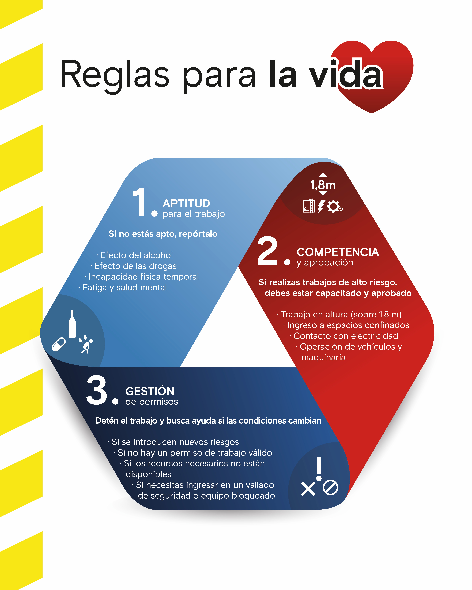

Minexus
Plataforma para la gestión de contratistas: habilitaciones, documentación, requisitos y procesos asociados.
Acceder a Minexus ↗Herramientas, requisitos y recursos para gestionar tus actividades de forma ágil, segura y eficiente.
Recordatorios clave para evitar demoras y asegurar que tu empresa esté preparada.
Plataformas y herramientas habituales para gestionar tu empresa y tus servicios en Rincón.
Plataforma para la gestión de contratistas: habilitaciones, documentación, requisitos y procesos asociados.
Acceder a Minexus ↗Registrá tu empresa para formar parte de la base de proveedores y ser considerado en oportunidades de contratación y compras de menor escala.
Acceder al portal ↗Gestión de inspecciones de seguridad, observaciones, hallazgos y acciones de mejora.
Acceder a SafetyCulture ↗Plataforma de Critical Risk Management (CRM) para administrar controles y verificaciones de riesgos críticos.
Acceder a Forwood ↗Instructivo paso a paso para completar la habilitación en la plataforma.
Acceder a la guía ↗Accedé al catálogo de capacitaciones disponible para contratistas.
Abrir Academy ↗Toda persona que ingrese a la operación debe completar las inducciones correspondientes antes de iniciar sus actividades y mantenerlas vigentes.
Los turnos se solicitan por correo electrónico. Es requisito excluyente contar con habilitación para ingreso en Minexus.
Solicitar turno ↗Solicitá el cronograma mensual con anticipación. Los cupos están sujetos a disponibilidad.
Gestioná turnos, cursos de conducción y capacitaciones requeridas según el rol y las tareas.
Los turnos para cursos de manejo se otorgan dentro de las 72 horas desde la recepción de la solicitud. Sin documentación completa no se asignará el curso.
Requisitos y lineamientos para los traslados hacia y desde Rincón.
Consultá los requisitos de salud necesarios para obtener la habilitación y el ingreso a las operaciones de Rincón.
Consultá el procedimiento vigente de aptitud para el trabajo y gestión de trabajo de seguridad crítico.
Consultar procedimiento ↗No se permite presentarse a trabajar bajo la influencia de sustancias. El nivel de alcohol permitido es 0,00% y está prohibido el uso de sustancias psicoactivas como THC.
Se pueden realizar controles aleatorios al ingreso o post-incidente. Negarse a una prueba se informa a RR.LL. y puede derivar en medidas disciplinarias.
Si consumís medicamentos recetados o de venta libre, o realizás la práctica cultural del coqueo, debés informarlo mediante el formulario correspondiente.
Descargar formulario ↗Las empresas contratistas que realicen tareas con riesgos de seguridad o ambientales deben acreditar que cuentan con su propia política de alcohol y drogas. Este resumen no reemplaza el procedimiento completo L-RN-0000-H-PRO-40013.
Requisitos y lineamientos para realizar actividades en las operaciones de Rincón.
Principios críticos de seguridad diseñados para prevenir lesiones graves y fatalidades en entornos de trabajo de alto riesgo.

Encontrá los documentos HSE indispensables para ingresar al sitio cumpliendo los requisitos mínimos establecidos. Si tenés dudas sobre un archivo que no figura en la lista, consultá al equipo.
Abrir Centro de HSE ↗Usá el enlace para enviar una consulta sobre requisitos y lineamientos de seguridad.
Contactar HSE ↗Información y requisitos ambientales aplicables a contratistas y empresas colaboradoras.
Antes de iniciar actividades, cada empresa debe gestionar adecuadamente los residuos, prevenir derrames, reportar incidentes y respetar la biodiversidad y los recursos naturales.
Ante dudas o eventos ambientales, escribí a:
medioambienterincon@riotinto.com ↗Procedimiento de facturación de Rio Tinto (Rincón) y contactos para presentación de facturas y consultas de pago.
Consultá el procedimiento para conocer los pasos necesarios para la correcta presentación de facturas.
Consultar procedimiento ↗CUIT: 30-71899954-1
Utilizá los datos fiscales indicados en la documentación de referencia.
Para el envío de facturas:
invoices@riotinto.com ↗Requisitos y lineamientos para quienes conducen vehículos hacia o desde Rincón y para empresas de transporte de cargas y pasajeros.
Consultá los requisitos y procedimientos vigentes con los responsables del área.
Para consultas sobre requisitos y lineamientos de Seguridad Vial, contactá a los responsables.
Enviar consulta ↗Accedé a los requisitos y lineamientos de Relaciones Laborales.
Para conocer los requisitos y procedimientos, contactá a los responsables de Relaciones Laborales.
Enviá una consulta a los contactos indicados en el documento fuente.
Contactar RR.LL. ↗